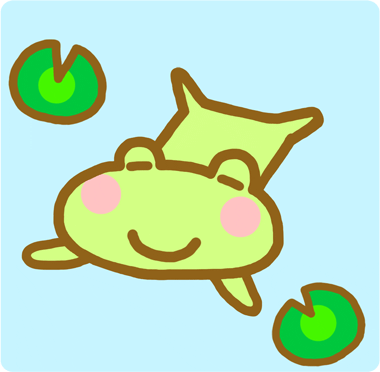

<div class="hero">
  <!-- GIF画像を中央配置 -->
  
/*  <div class="caption">Chromosomes are living information media within the cell.</div> */
  <h1>Chromosomes are living information media within the cell.</h1>
</div>

<style>
/* ページ全体に淡いグラデーション背景 */
body {
  margin: 0;
  background: linear-gradient(180deg, #f8fafc 0%, #eef2f3 100%);
  font-family: 'Helvetica Neue', Helvetica, Arial, sans-serif;
  color: #333;
}

/* 中央配置ブロック */ 
.hero {
  display: flex;
  flex-direction: column;
  align-items: center;
  justify-content: center;
  text-align: center;
  min-height: 90vh; /* 画面の縦いっぱいに近く */
  padding: 3rem 1rem;
}

/* GIF画像 */
.hero img {
  max-width: 300px; /* 大きすぎないように */
  height: auto;
  margin-bottom: 2rem;
  border-radius: 12px; /* 少し角を丸くすると柔らかい印象 */
  box-shadow: 0 4px 20px rgba(0, 0, 0, 0.05); /* ごく薄い影 */
}

/* キャプション */
.caption {
  margin-top: 1rem;
  font-size: 2.75rem;
  font-weight: bold;
  color: #333;
  font-family: Helvetica, Arial, sans-serif;
}

/* テーマ文 */
.hero h1 {
  font-size: 2.5rem;
  font-weight: 500;
 /* font-weight: bold; */
  letter-spacing: 0.03em;
  color: #222;
  margin: 0;
  line-height: 1.4;
}

/* レスポンシブ対応 */
@media (max-width: 600px) {
  .hero h1 {
    font-size: 1.6rem;
  }
  .hero img {
    max-width: 220px;
  }
}

</style>
